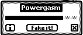

James Thiele's Newton Powergasm
This program is a simple battery monitor which plays part of the fake orgasm
from the movie "When Harry Met Sally" when the charger is plugged in. The idea
was shamelessly stolen from the PowerOrgasm system extension for Apple
PowerBooks. A button is also provided to "Fake It". It is just for fun, and
has no other intended utility.
Version 0.2

The screen layout of this program from top
to bottom and left to right has the following elements:
![[Powergasm]](Title.GIF) The name of the application.
The name of the application.
![[Battery Guage]](Battery.GIF) A simple guage showing the battery level.
A simple guage showing the battery level.
![[Info button]](InfoButton.GIF) when tapped will cause some
basic info about PowerGasm to be displayed.
when tapped will cause some
basic info about PowerGasm to be displayed.
-
button, which when tapped will cause the
orgasm sound to be played.
.
![[Close box]](CloseBox.GIF) closes PowerGasm.
closes PowerGasm.
- You can drag PowerGasm around by the gray edge.
PowerGasm can be downloaded in the following compressed formats:
Note: Most browsers are capable of decompressing these
files in one of these formats.
Comments about this program:
- PowerGasm eats up a lot of space.
- There doesn't appear to be a way to distinguish between a fully charged
battery and a plugged in charger. This means that as you use a fully
charged battery fluctuations in battery readings may cause spontaneous
orgasms. If someone out there can tell me a way to tell precisely
how to detect a charged battery, I'd be grateful.
- There are occasional pops/clicks in the sound.
- PowerGasm remembers where you dragged it between uses, but
forgets after a reset.
- The buttons are so small and so close to the draggable edge that
the lower parts of buttons only work marginally.
- Only tested on Newton MessagePad 100 and 120 (OS 1.3). I haven't had
reports of any Newton it doesn't work on (as of Feb 1999).
- Mostly harmless.
Legal stuff
This program is Copyright 1994, 1995 by James
Thiele. It may be distributed freely as long as the program is unmodified and is
accompanied by this README file.
Because there are too many lawyers in the world, I add the following
statement:
This program is made available without any claim that it is suitable for any
use. The author's liability is limited to what was charged for it which was
nothing. It works OK on my MP 100 and 120, but I am not making
any other statements of other systems it could or should run on.
Credits
Thanks to Hardy Macia for his protoFloatDragNGo prototype.
Thanks to Area51 on eWorld for chastising me during a conference
for using undocumented features and causing me to rewrite it to be clean.
Author
James Thiele
You can let the author know what you think of this program by contacting
him in one of the following ways:
Page last updated 5 March 1999